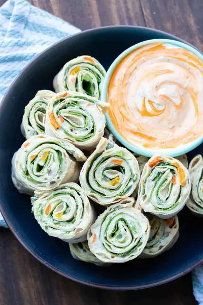

Vegan Pinwheels

Ingredients
- 1 sheet lavash bread (I used Atoria's Lavash (see note)
- 6 tablespoons vegan cream cheese
- 3 tablespoons salsa
- 3 pieces lettuce (, you can remove the rib to make it easier to roll)
- bean dip
- salsa
- avocado
- pizza sauce
- your favorite cheese (, dairy free to keep it vegan)
Steps
- If preferred, slice the lavash bread into 4 long pieces.
- Lay lettuce down onto the lavash bread. This helps protect it from getting soggy from the cream cheese and salsa. You will need to cut the lettuce a bit to fit the strips if you cut the bread.
- Spread cream cheese over the lettuce.
- Spread salsa over the cream cheese.
- Tightly roll the lavash bread until the end.
- Slowly and carefully slice into 1-2 inch pieces.
- Enjoy!
Recipe by Anjali Shah, from The Picky Eater. Saved here for personal use; the original has the full notes, tips and photos. Open original